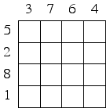
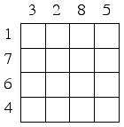
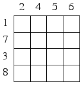
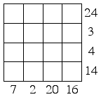
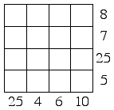
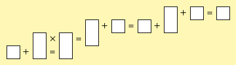
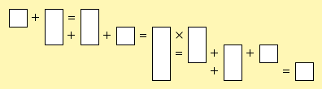
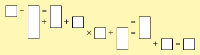
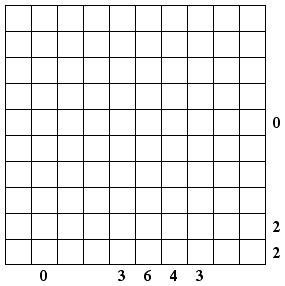
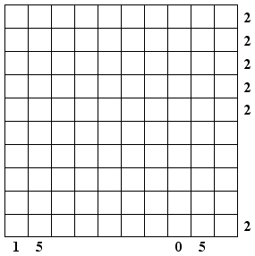

Place the digits 1 or 9 into each square so that the eight different 4-digit numbers reading across and down are in increasing numerical order, as indicated by the numbers outside the grid. For example, the row or column indicated with a 1 is the smallest 4-digit number, followed by the row or column indicated with a 2, and so on.
1.-3. Order in the Court
|  |  |  |
4.-5. Digit Fidget
Place the digits 1-9 into the grid so that each row and column adds to the corresponding number given outside the grid. Each number is used exactly once, so some squares are left blank.
|  |  |
6.-8. Equations
Enter a different digit from 1 to 9 into each of the boxes so that each of the four equations reading across is true. All calculations are done from left to right and involve only positive integers.
|  |
|  |
|  |
9. Weighs and Means
Assign the values 1 to 12 to the weights in the diagram so that everything balances as shown. Each value will be used exactly once.
10.-11. Do or Die
Place six dice in the grid, each showing a different face. A face takes up a 3x3 square in the grid, and faces are not allowed to overlap. The numbers below and to the right of the grid indicate how many pips are in the corresponding row or column.
|  |  |
12. Hexasperation
Find a looped path through the grid subject to the following constraints: the path must proceed from one cell to an adjacent cell, it must pass through no cell more than once, it must not go through any numbered cells, and must never make a sharp 60o turn. Each number indicates how many of the adjacent cells are part of the path.
13. Rolling Block Maze
This is a multi-level rolling block maze with the following rules:
1. Each of the dark blocks (A, B, and C) can roll in any one of four directions, using one of its base edges as the axis of rotation. The light colored walls are barriers, not blocks, and do not move.
2. A block cannot roll if it is obstructed by other blocks or barriers, if it would fall outside the edge of the maze, or if the new base would not be fully supported from below.
3. The blocks can never change levels. Block A must always rest on the floor of the maze, block B must always rest on the first level, and block C must always rest on the second level.
For example, block B and C cannot move first. Block A can only roll South. After that, block B could roll East, partially supported by block A. If instead block A rolled South twice, block C could roll West, supported by block A. The goal of the maze is to move block C on top of space X.
Click here for the answers.